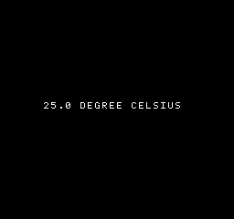
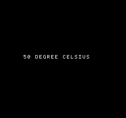
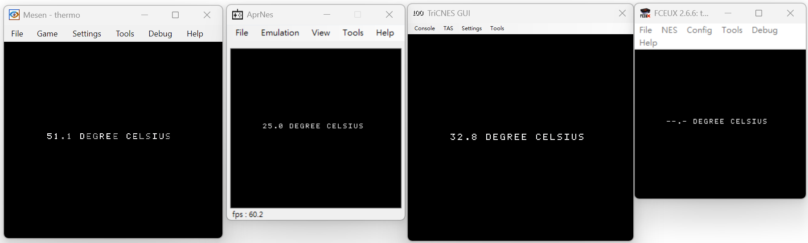
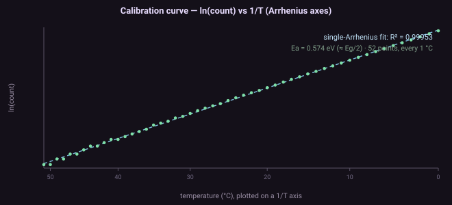
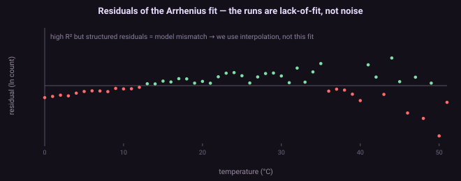
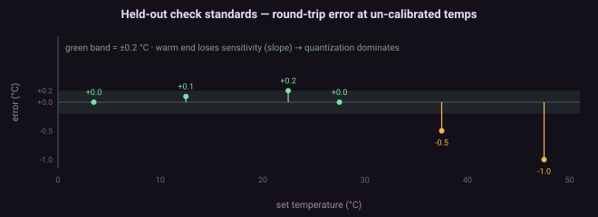

⬇ Download & run⬇ 下載與執行
You need the custom AprNes. The temperature knob is not in stock AprNes or any other emulator — it lives only in the AprVisual project's special build (tools/aprnes/), where the PPU open-bus latch is modelled as a temperature-dependent decay. The Celsius read-out is calibrated to that build (the count depends on its exact loop timing). The ROM initialises its own palette + attributes, so the text renders on any emulator — but the number only lands in our calibrated 0–51 °C range if that emulator's open-bus decay timing is close to ours. If it decays much faster (e.g. a coarse fixed-tick counter) the reading clamps hot to 51.1; if it never decays, the count never terminates and the no-hang guard shows --.-. In other words the four-emulator survey below is really about how each emulator models open bus, not about temperature. Grab the packaged build below, or build it yourself from tools/aprnes/.你需要特製版 AprNes。溫度旋鈕不在原版 AprNes、也不在任何其他模擬器裡 —— 它只存在於 AprVisual 專案的特製 build(tools/aprnes/),那裡把 PPU open-bus 閂鎖建模成溫度相關衰減。攝氏讀值是對那個 build 校準的(計數依賴它確切的迴圈時序)。ROM 會自己初始化調色盤 + 屬性,文字在任何模擬器都顯示得出來 —— 但那個數字只有在該模擬器的 open-bus 衰減時序跟我們接近時,才會落在我們校準的 0–51 °C 範圍內。若它衰減快很多(例如粗略的固定-tick 計數器),讀值會夾到最熱的 51.1;若完全不衰減,計數永不結束、防卡死保護顯示 --.-。換句話說,下面那張四模擬器圖其實是在講各家怎麼模擬 open bus、不是溫度。下面直接抓打包好的 build,或自己從 tools/aprnes/ 建。
aprnes-custom.zip — the custom emulator, ~240 KB (Win + .NET Fx 4.8.1)特製模擬器,~240 KB(Win + .NET Fx 4.8.1) thermo.nes — ROM, 24 KBROM,24 KB thermo-src.zip — ROM source: asm + build.py + tableROM 原始碼:asm + build.py + 表 thermo.asm — view the source直接看原始碼
One-liner once unzipped: AprNes.exe --rom thermo.nes --openbus-temp 25 --time 6 --dump-mem 0013. Full source on GitHub: tools/aprnes/ · tools/thermo_rom/解壓後一行跑:AprNes.exe --rom thermo.nes --openbus-temp 25 --time 6 --dump-mem 0013。完整原始碼在 GitHub:tools/aprnes/ · tools/thermo_rom/
The tool工具A temperature knob in a real emulator在真模擬器裡裝一個溫度旋鈕
The AprVisual switch-level engine is bit-exact but far too slow to run a 600 ms decay — so for this experiment we used AprNes, the user's fast, cycle-accurate (master-clock) NES emulator, as the test bench. AprNes already tracked an open-bus latch but never actually decayed it (a leftover countdown that expired in ~14 ms, far too fast). We replaced that with the physical model from deep dive #3:
AprVisual 的開關級引擎 bit-exact,但太慢、跑不動一個 600ms 的衰減 —— 所以這個實驗改用AprNes(使用者那顆快速、cycle-accurate 的 master-clock NES 模擬器)當測試台。AprNes 本來就追蹤一個 open-bus 閂鎖,但從沒真的讓它衰減(一段殘留的倒數 ~14ms 就到期、太快)。我們把它換成深入專文 #3 的物理模型:
- a lazy-timestamp decay: the latch is stamped with the current PPU-dot time whenever a PPU access drives it, and reads back as 0 once the elapsed time passes the decay period — zero cost in the hot loop;
- 懶惰時戳衰減:每次 PPU 存取驅動閂鎖時蓋上當下的 PPU-dot 時間,一旦經過的時間超過衰減週期,讀回就是 0 —— 熱路徑零成本;
- the decay period follows the Arrhenius law
t(T) = t0·exp(Ea/k·(1/T − 1/Tref)), witht0 = 600 msat 25 °C — so it is temperature-controlled; - 衰減週期依 Arrhenius
t(T) = t0·exp(Ea/k·(1/T − 1/Tref)),25 °C 時t0 = 600ms—— 所以受溫度控制; - only the PPU latch decays — the CPU external bus is re-driven by every instruction fetch, exactly as on hardware.
- 只有 PPU 閂鎖衰減 —— CPU 外部匯流排每次取指都被重驅動,和硬體一模一樣。
Then two headless CLI flags expose it:
再用兩個無頭 CLI 旗標把它露出來:
--openbus-temp <°C> ; set the die/ambient temperature for the run (default 25) --dump-mem <hexaddr> ; print 8 bytes + the little-endian u24 at that CPU address at exit
So the temperature is a literal knob (hard-coded 25 °C by default; wire it to a UI later), and --dump-mem lets us read the ROM's result numerically instead of squinting at a screenshot.
於是溫度就是一個字面的旋鈕(預設寫死 25 °C,以後可接 UI),而 --dump-mem 讓我們用數值讀出 ROM 的結果,不用瞇著眼看截圖。
The test ROMTest ROMPrime, poll, count, invert, print充電、輪詢、計數、反推、印出
The ROM (tools/thermo_rom/, a plain NROM cart assembled with WLA-DX) is a five-step pipeline:
這顆 ROM(tools/thermo_rom/,用 WLA-DX 組譯的一般 NROM 卡帶)是一條五步管線:
- Prime — write
$FFto$2002(PPUSTATUS is read-only, so the write is ignored as a register op but still fills the open-bus latch, with no side effect). - 充電 —— 寫
$FF到$2002(PPUSTATUS 唯讀,所以寫入被當暫存器操作忽略、但仍填進 open-bus 閂鎖,無副作用)。 - Poll & count — tight-loop
LDA $2001 / CMP #$FF(reading a write-only register returns the full 8-bit open bus), incrementing a 24-bit counter until the first bit drops. That count is the decay time, measured in loop iterations. - 輪詢計數 —— 緊迴圈
LDA $2001 / CMP #$FF(讀寫入專用暫存器回傳完整 8 位 open bus),遞增一個 24-bit 計數器,直到第一個位元掉下來。那個計數就是衰減時間,以迴圈次數為單位。 - Invert — turn the count into a temperature (see §below).
- 反推 —— 把計數轉成溫度(見下節)。
- Print — write
NN.N DEGREE CELSIUSto the name table and turn rendering on. - 印出 —— 把
NN.N DEGREE CELSIUS寫進 nametable、打開渲染。
The one non-obvious thing (the whole reason the trick works) is that we watch the PPU's I/O latch, not a CPU open-bus address — the polling opcodes travel over the CPU bus and would overwrite it every fetch, so you'd read the last opcode, never the decay. The ROM's source is heavily commented as a tutorial.
唯一不明顯、也是整個訣竅成立的關鍵:我們看的是 PPU 的 I/O 閂鎖,不是 CPU open-bus 位址 —— 輪詢的 opcode 走 CPU 匯流排、每次抓取都會把它覆寫掉,你會讀到最後那個 opcode、永遠讀不到衰減。ROM 原始碼有大量教學註解。
Usage用法Build it, run it, read it建置、執行、讀取
# build the ROM (generates the lookup table, assembles, wraps as iNES) python tools/thermo_rom/build.py # run headless at 25 °C, dump the result, screenshot frame 120 (~2.0 s) AprNes.exe --rom thermo.nes --openbus-temp 25 --time 6 \ --dump-mem 0013 --timed-screenshots "c_25.png:2.0" ; MEM_DUMP 0013: ... u24_le=250 -> 250 tenths = 25.0 °C
Two gotchas. (1) Cold runs decay slowly, so the measurement may not finish by frame 120 — the screen stays black until it does; screenshot a later frame for cold temperatures. (2) Under Git Bash, MSYS mangles the path:seconds argument (the : looks like a unix path-list separator) — use PowerShell for --timed-screenshots.
兩個雷。(1) 冷溫衰減慢,量測可能到 frame 120 還沒完成 —— 沒完成前螢幕是黑的;冷溫請截更晚的幀。(2) Git Bash 下 MSYS 會搞壞 path:秒數 參數(: 被當成 unix 路徑清單分隔符)—— 截圖那類指令請用 PowerShell。
It works它成功了The readout, across temperatures跨溫度的讀值


Real frame captures from the headless emulator: feed the knob a temperature, and the ROM — which only ever measured a decay count — reads it back on screen. The round-trip (set °C → displayed °C):
來自無頭模擬器的真實幀截圖:給旋鈕一個溫度,而這顆只量了一個衰減計數的 ROM,就把它讀回螢幕上。Round-trip(設定 °C → 顯示 °C):
| set °C | 0 | 10 | 20 | 25 | 30 | 40 | 43 | 50 |
|---|---|---|---|---|---|---|---|---|
| displayed顯示 | 0.0 | 10.0 | 20.0 | 25.0 | 30.0 | 40.0 | 43.5 | 50.0 |
Exact at the marked points; the 43 °C wobble (43 and 44 both read 43.5) is the honest warm-end measurement limit discussed below. And remember: this "round-trip" only inverts the emulator's own model — see the note on circularity below.
標出的點都精確;43 °C 的偏差(43 和 44 都讀 43.5)是下面討論的暖端量測極限。也別忘了:這個「round-trip」只是把模擬器自己的模型反過來 —— 見下方關於循環的說明。

thermo.nes in four emulators — which turns it into an accidental survey of how each one models PPU open-bus decay. The text renders in all of them (the ROM sets its own palette + attributes), but only AprNes, whose decay is calibrated to our table, reads the true 25.0. The other three land outside our range, in three different ways: TriCNES (32.8) decays within our range but with different timing — an in-range but uncalibrated reading; Mesen (51.1) pins to the very top of our range — its open bus decays far faster than our ~600 ms calibration covers (consistent with a coarse fixed-tick decay counter, like the ~14 ms one our own AprNes had before we replaced it), so the count falls below our table and clamps hot; FCEUX (--.-) never decays open bus at all, so the count never terminates and the ROM's no-hang guard fires. In other words 51.1 and --.- are not temperatures — they're the two out-of-range signatures: too-fast decay and no decay.同一顆 thermo.nes 在四個模擬器 —— 這讓它變成一份意外的「各家怎麼模擬 PPU open-bus 衰減」調查。文字在每一個都顯示得出(ROM 自己設調色盤 + 屬性),但只有衰減對我們的表校準過的 AprNes 讀出真值 25.0。另外三個都落在我們範圍之外,而且方式不同:TriCNES(32.8)的衰減在我們範圍內、只是時序不同 —— 範圍內但未校準的讀值;Mesen(51.1)頂到我們範圍的正上限 —— 它的 open bus 衰減遠快於我們 ~600ms 的校準(符合一個粗略的固定-tick 衰減計數器,像我們自己 AprNes 換掉前那個 ~14ms 的),計數掉到表最小值以下、夾到最熱;FCEUX(--.-)完全不衰減,計數永不結束、觸發 ROM 的防卡死保護。換句話說 51.1 與 --.- 不是溫度 —— 是兩個超出範圍的簽名:衰減太快與不衰減。Calibration diagnostics校準診斷How the curve actually looks (for the statisticians)曲線實際長怎樣(給統計的人)
Because a calibration expert asked — and rightly noted you can't do a chemistry-style spike/blank pair for temperature — here is exactly how the calibration behaves. First, one thing that changes all the statistics: the emulator is deterministic. Running the same temperature five times gives the identical integer count (25 °C → 66268 every time), so per-point %RSD is strictly 0 — the uncertainty here is quantization (integer counts), not stochastic dispersion, and σ-based metrics (prediction intervals, LOD/LOQ) are degenerate.
因為一位校準專家問了 —— 而且正確指出溫度沒辦法做化學那種 spike/blank 對照 —— 這裡把校準的實際行為攤開。先講一件會改變所有統計的事:模擬器是確定性的。同一溫度跑五次得到完全相同的整數計數(25 °C → 每次 66268),所以per-point %RSD 嚴格為 0 —— 此處的不確定度是量化(整數計數),不是隨機散布,基於 σ 的指標(預測區間、LOD/LOQ)在此退化。

ln(count) vs 1/T, 52 points (every 1 °C, 0–51 °C). A single-Arrhenius log-linear fit gives R² = 0.99954, with an extracted Ea ≈ 0.574 eV (close to the theoretical Eg/2 ≈ 0.56 eV).Arrhenius 軸上的校準:ln(count) vs 1/T,52 點(每 1 °C,0–51 °C)。單一 Arrhenius log-linear 擬合 R² = 0.99954,反推 Ea ≈ 0.574 eV(接近理論 Eg/2 ≈ 0.56 eV)。
(1/T, ln count) — the table passes exactly through every measured point.但 R² 是不能盡信的:那個擬合的殘差不是隨機的 —— 冷端全負、中段全正、暖端混雜。那種結構是教科書級的 lack-of-fit(結構偏差,不是噪音)。加 1/T² 只是微調(R² = 0.99970)。所以我們不用參數迴歸,而是密集量測 + 分段線性內插於 (1/T, ln count) —— 表恰好通過每個量測點。
d(count)/dT flattens (a hot die decays so fast the loop runs few times), so one integer count spans a wide temperature and quantization dominates.高/低驗證:用不在校準內的分數溫度當獨立 check standard。round-trip 誤差在 ~30 °C 前 ±0.2 °C 內,40 °C 退到 ~0.5 °C、50 °C ~1 °C —— 實用工作範圍約 0–35 °C。暖端退化是失去 sensitivity:校準斜率 d(count)/dT 變平(晶粒熱時衰減太快、迴圈跑很少次),所以一個整數計數跨越很寬的溫度,量化主導。Raw data and the reproducible fit/residual/check script are in the repo: counts_by_degree.json · calib_stats.py. All of this validates the software pipeline on a deterministic emulator, not the physics — on real silicon %RSD becomes non-zero and proper chemometrics (replicates, thermal-chamber high/low, a fit that survives a lack-of-fit test) would apply.原始資料與可重跑的擬合/殘差/檢查腳本在 repo:counts_by_degree.json · calib_stats.py。這一切驗證的是確定性模擬器上的軟體管線、不是物理 —— 真矽晶上 %RSD 會非零,才需要正規 chemometrics(重複量測、thermal-chamber 高/低、通過 lack-of-fit 檢定的擬合)。
Count → Celsius, on a 65026502 上 count → 攝氏No multiply, no divide, no float不乘、不除、不浮點
Inverting an Arrhenius curve means a logarithm and a reciprocal — miserable on a 6502. So we do none of it at runtime. On the PC side, build.py precomputes the whole curve as a 0.1 °C lookup table: thr[i] = the count you would measure at temperature i·0.1 − 0.05 °C, for i = 0..511 (so the index is the temperature in tenths of a degree, 0.0–51.1 °C). The table decreases (cold = big count).
反推 Arrhenius 曲線要對數和倒數 —— 在 6502 上很痛苦。所以我們在執行期一個都不做。PC 端 build.py 把整條曲線預先算成一張 0.1 °C 查表:thr[i] = 在溫度 i·0.1 − 0.05 °C 會量到的計數,i = 0..511(所以 index 就是溫度的十分之一度,0.0–51.1 °C)。表遞減(冷 = 計數大)。
The ROM then finds "the largest index whose threshold is still ≥ our count" with a 9-step power-of-two binary search — building the 9-bit index one bit at a time, no division. Finally it formats the index as N.N with repeated-subtraction BCD (subtract 10s and 100s, count the subtractions). The approach — lookup + radix search + subtraction BCD — was the division-free path recommended by a 6502 consult.
ROM 再用 9 步 2 的冪次二分搜找「門檻仍 ≥ 我們計數的最大 index」—— 一次組一個 bit 出 9-bit index,不用除法。最後用連減法 BCD(反覆減 10、100 數次數)把 index 格式化成 N.N。這條路 —— 查表 + radix 搜尋 + 連減 BCD —— 是一次 6502 諮詢推薦的免除法做法。
; the whole search — 9 iterations, no MUL/DIV ldx #0 ... ; idx = 0, step = 256 rx_loop: ; test = idx + step ; if thr[test] >= count: idx = test jsr read_thr ; fetch the 24-bit threshold (SoA: thr_lo/mid/hi) lda tblL / cmp cnt0 ; 24-bit compare via CMP + SBC chain bcc rx_next ; thr < count -> don't set this bit ... ; else idx = test lsr stpH / ror stpL ; step >>= 1, loop until 0 ; idx (0..511) == temperature in tenths
Where it's rough哪裡粗糙Honest limits — it's a validation, not a product誠實極限 —— 這是驗證,不是產品
- Warm-end resolution is real physics, not a bug. When the die is warm the decay is fast, so the loop runs few times and the count is coarse. Above ~40 °C neighbouring degrees can land on the same count (43 and 44 °C both measure the same value), so the 0.1 digit there is false precision — the table maps them both to the midpoint (43.5). The cold end (0–~30 °C), where the count is tens of thousands, is genuinely ~0.1 °C. This is exactly the "resolution degrades as decay speeds up" caveat from the study.
- 暖端解析度是真物理、不是 bug。晶粒熱時衰減快,迴圈跑得少、計數就粗。~40 °C 以上相鄰度可能落在同一個計數(43 和 44 °C 量到相同值),所以那裡的 0.1 位是假精度 —— 表把兩者都對到中點(43.5)。冷端(0–~30 °C)計數是幾萬,才是真的 ~0.1 °C。這正是專文說的「衰減越快、解析度越差」。
- Range is clamped. The table covers 0.0–51.1 °C; anything colder or warmer pins to the ends.
- 範圍會 clamp。表涵蓋 0.0–51.1 °C;更冷或更熱都夾到端點。
- It's a per-model calibration. The count depends on the emulator's exact loop timing, so the lookup table is calibrated to this build of AprNes. On real silicon the absolute offset differs per console (a one-point calibration fixes it — the Arrhenius slope is universal, only the offset moves).
- 這是逐模型校準。計數依賴模擬器確切的迴圈時序,所以查表是對這個 AprNes build 校準的。真矽晶上絕對 offset 逐台不同(一點校準即可修正 —— Arrhenius 斜率普世,只有 offset 會動)。
- Emulator ambient ≠ hardware room. Here the knob is literal ambient temperature. On a real NES the PPU self-heats +30–40 °C, so the same ROM would read the die temperature unless cold-booted and read within seconds. The emulator sidesteps that — which lets us exercise the software mechanism cleanly (but doesn't prove the real-hardware model — see below).
- 模擬器的環境溫度 ≠ 硬體室溫。這裡旋鈕是字面的環境溫度。真 NES 上 PPU 自體發熱 +30–40 °C,同一顆 ROM 會讀到晶粒溫度,除非冷開機幾秒內讀。模擬器繞過這點 —— 這讓我們乾淨地跑通軟體機制(但不證明真硬體模型 —— 見下)。
- The round-trip is circular — this is the key caveat. The emulator sets decay = f(T); the ROM computes T = f⁻¹(decay). Recovering the input temperature is therefore guaranteed by construction — it proves the software (measure → invert → display) is correct, and nothing about whether the model is right on real silicon. A real validation needs real hardware and an external reference thermometer, which is future work.
- round-trip 是循環的 —— 這是最關鍵的但書。模擬器設 decay = f(T);ROM 算 T = f⁻¹(decay)。拿回輸入溫度是先天保證的 —— 它只證明軟體(量測 → 反推 → 顯示)正確,完全不證明模型在真矽晶上對不對。真正的驗證需要實機 + 外部參考溫度計,是未來的工作。
- Arrhenius is a first-order model.
Ea ≈ 0.56 eV≈ Eg/2 is the generation–recombination leakage that dominates near room temperature; above ~80–100 °C diffusion current (Ea ≈ Eg) kinks the slope, and the measured time also depends onC(V), the read-buffer threshold-voltage drift (~−2 mV/°C), and VDD. Our emulator uses the single-Arrhenius law; a faithful model would layer these in. - Arrhenius 是一階模型。
Ea ≈ 0.56 eV≈ Eg/2 是室溫附近主導的 generation–recombination 漏電;~80–100 °C 以上擴散電流(Ea ≈ Eg)讓斜率折點,量到的時間還取決於C(V)、讀取緩衝閾值電壓漂移(~−2 mV/°C)、VDD。我們模擬器用單一 Arrhenius;忠實模型要把這些疊進去。 - No ground truth for calibration. On real hardware the die self-heats and there's no on-chip thermal sensor, so software can never read the true junction temperature to check its calibration against — external package temperature is only a thermal-gradient-error proxy. This is a fundamental limit; the honest framing is a relative instrument.
- 校準沒有 ground truth。真硬體上晶粒自體發熱、又沒片上溫度感測器,軟體永遠讀不到真接面溫度去對照校準 —— 外部封裝溫度只是隔著熱梯度誤差的 proxy。這是根本限制;誠實的定位是一把相對儀器。
So, honestly: this shows a physical model of an emulator "bug" (open-bus decay) given a temperature dependence, and a stock 6502 program reading that dependence back out as a number. The software pipeline works end-to-end. Whether the underlying model matches real silicon is a separate, unproven question — one deep dive #3's corrections now spells out, with thanks to the NESdev reviewer who pushed on exactly these points.
所以,誠實地說:這展示了一個模擬器「bug」(open-bus 衰減)的物理模型被給了溫度相依,以及一支原廠 6502 程式把那個相依讀回成一個數字。軟體管線端到端可運作。底層模型是否符合真矽晶,是另一個、還沒被證明的問題 —— 深入專文 #3 的更正現在把它講清楚了,並感謝那位正好戳中這些點的 NESdev 審閱者。
← back to deep dives · the theory: deep dive #3← 回深入專文 · 理論篇:深入專文 #3